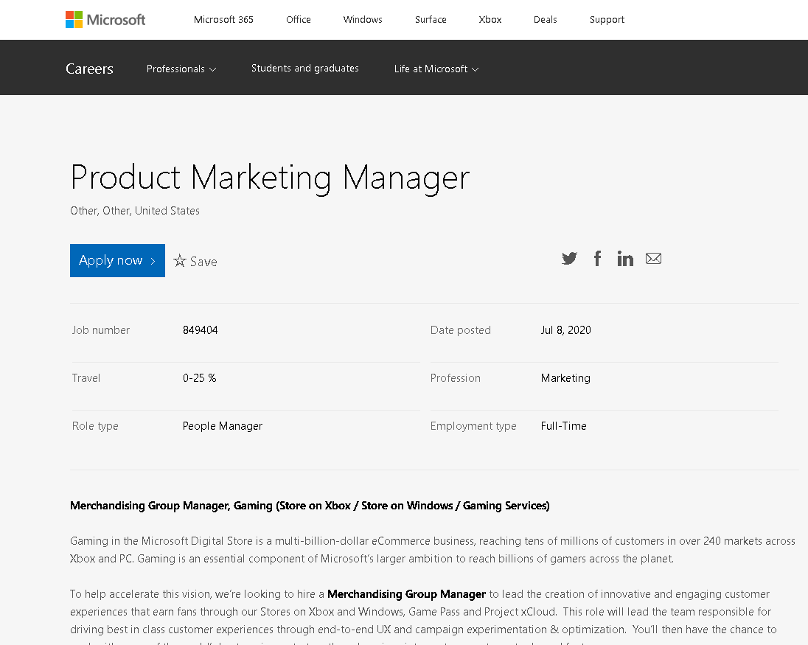

Welcome to my Profile
Hi my name is Daniel Chong Ka Wai
Personal Information
I'm in my final semester as a Business Marketing Student at RMIT
I come from Malaysia and enjoy brewing coffee and playing frisbee in my spare time!
Student ID: S3713285
Student Email: s3713285@student.rmit.edu.au
Why did I choose RMIT?
I chose RMIT because of its study structure. I liked the fact that it was very assignment heavy and gave students a lot of opportunities to do hands on work.
Why did I choose to study IT in RMIT?
I chose this subject as an elective this semester as before settling for my current degree in Business Marketing I was enrolled and interested in pursuing a degree in Computer Science. Sadly, at that time of my life I was not able to make use of the opportunity that was in front of me and was decided that a life primarily in IT was not right for me.
After reconsidering my options and landing on Business Marketing, I was happy with my decision to change course but still found myself leaning towards IT related subjects for my electives. This is no different going into my last semester of my degree as a Business Marketing student in RMIT, enrolling myself into this subject.
I never lost my interest in IT throughout the years and always told myself that I would get back into programming as I was always open to learning more about it. This subject enables me to do so at a basic level and even introduces me to a language that I am yet to learn, HTML.
What do I expect to learn during my studies?
I expect to learn core skills that will help propel my career in the future and help me reach my maximum capacity.
What makes IT Interesting to me?
Just the broad structure of IT interests me. You can find IT in everything nowadays; you can even find IT in utensils (it’s crazy)! IT is around us and connects us to the whole world and I’d like to learn at least a little about how its done.
What do I hope to do after graduation?
I hope to find a job in marketing that can connect all my skill sets and interests together. I want to find a job that enables me to work with technology while doing my best as a marketer to promote it.
Ideal Job
Skills, qualification, and experience required for the job
Skills, qualification, and experience that I currently possess
My plan to improve
Personality Tests Results
Myers-Briggs test link
.png)
INTP personality type
What does the result mean to me?
It affirms my belief that I am a capable individual that strives to be better than I already am and am also open to change if it helps develop me as an individual.
How do I think these results may influence your behavior in a team?
I think that this result doesn’t really influence my behavior as a team member at all, I’ve always been open to new ideas and ready to adapt for the team if needed. I have no problem taking the lead if needed and have no trouble letting others take the lead as well. Teamwork has always been important to me and this result does not impact my approach at all.
How should I take this into account when forming a team?
I think that this result shows that I am flexible and comfortable working with anyone. The few aspects of a team that I would look for when forming one would be good communication, respect, and an open area to voice out our concerns and ideas.
Education Planner Learning Style Test link
Result: Visual learner
What does the result mean to me?
The result from this test means that I might have to change my approach when it comes to the way I study. I should integrate a more visual approach when studying using flash cards and color coding my notes. This test has definitely opened my eyes and helped me realize that by doing these simple steps I might be able to learn things more effectively.
How do I think these results may influence your behavior in a team?
I do not necessarily think that the results of this test will influence my behavior in a team, but I’ll definitely think of approaching team planning and brain storming sessions in a more visual way.
How should I take this into account when forming a team?
I do not think me being a visual learner will affect the way I form a team as I do not think that I need a team full of visual learners to succeed in a team environment. Exposure to different methods and ideologies will definitely help in developing more unique ideas.
Test My Creativity - Creativity Test link

What does the result mean to me?
My creativity score is eye opening to me as the people around me have always perceived me as a creative person and as such I have always thought of myself as a creative person. To know that I have a creativity score lower than the average was interesting to me. But with that being said my two strong suites, Complexity and Paradox do help me understand why I was perceived as a creative person.
The ability to carry large quantities of information, manipulate and manage the relationships between them (complexity) and the ability to accept and work with contradicting statements (paradox) puts me in a unique situation when it comes to creativity.
This result means that I can handle a complex situation creatively very well and work with unique situations regularly. I feel like even though my creativity score is low, my skill set and willingness to adapt can definitely push me ahead of my peers.
How do I think these results may influence your behavior in a team?
I don’t think that my creativity results will affect my behavior in a team, but I think that my creativity results may put me in a situation where I am asked to find reason in a difficult situation and might push me to take on a leadership role.
How should I take this into account when forming a team?
I think that with the creativity results that I have obtained it would be more effective if I grouped myself with people that have a higher score in other creative departments like persistence, abstraction, connection and curiosity.
IT Project Idea
Overview
My IT Project Idea resolves around an everyday activity that all of us do, cooking. More specifically seasoning, more than once when following a recipe online I find myself without a needed grinder or measurement apparatus. So, I thought why not combine both of them into one device and make a Smart Spice Grinder/Dispenser.
Motivation
To create an innovative device that takes the hassle of grinding spices accurately away whilst also giving the user a convenient place to store the spices. It is no secret that freshly ground spices tend to bring more flavor to a dish compared to pre-ground spices. As stated by Jones, G (2010, para 9) ‘buying your spices whole and grinding them yourself will universally produce greater flavor than employing their pre-ground counterparts. It is for the home cook who loves throwing lavish dinner parties for all their guests’. This smart spice grinder allows them to prepare their spices quickly and easily with minimal fuss. They can cook up large portions for all their guests efficiently. Not only that, but it is an interesting and fun device that they can show off to their friends.
Description
To start of I want to focus on the one spice that is most used by most home cooks, black peppercorn. The Smart Spice Grinder/Dispenser is an electronic spice grinder made out of stainless steel, I chose stainless steel as it is resistant to light, air, humidity and it is lightweight. Perfect for grinding and storing spices. To grind the spices, I’ll be using two flat burr grinders at the bottom of the device to precisely and consistently grind the spices. This material is commonly seen in coffee bean grinders as it provides a consistent grind throughout the grinding process. At the top of the device, users can find the on/off button and a battery indicator. Users will long press the on/off button to enter paring mode where users can pair their smart grinder to their phone and download the companion app to track the quantity of spices they have left in the vessel, change measurement units to their preference and browse through an array of recipes categorized by cuisine, spice and dietary preference.
The device also has a powerful but compact motor that helps turn and adjust the burrs depending on the user setting adjusted on the grinder itself or on the app. The settings include the quantity that the user wants to grind and how fine the user would like to grind the spice to. Users can also set a preset on the device itself to minimize the hassle even more, users then press the action button on the bottom of the grinder or on the companion app and just watch as their spice of choice is ground to perfection.
Users will also have the option to mount their smart spice grinder on the wall using the included wall mount that comes with the grinder or just use it hands-free as a normal electrical grinder. Its aesthetic is minimalistic with a black outside finish and white LED lights to indicate that the battery life of the device, the process of the spices grinding, and that the device is on or off. The LED lights will also flash red when the device needs a charge. And to top it all off, the device charges through the always reliable USB-C cable that is included in the box.
Tools, Technologies and Skill Required
The hardware of the Smart Spice Grinder as stated above will include the inclusion of a stainless steel frame that covers the whole device from top to bottom, a 3000mAh rechargeable battery, an energy efficient LED display, four LED lights (one for the power button and three as battery indicators), two flat burr grinders, a compact but powerful motor and an air-tight lid. On the software side of the project, I will be using Java as my preferred programming language as I have past experience with it and feel comfortable using it compared to other languages. The skills required for this project would definitely be more to the engineering and programming side of things. As I am capable of coding using Java myself the app should not be a problem but getting help with the engineering side of things can definitely be a challenge in the future. The hardware for this product is definitely obtainable and available in the market and if not can be obtained in at least a year.
Outcome
If this project is successful, the outcome will be a reliable and durable Smart Spice Grinder that I will happily use myself. I think this product even though a bit niche to some can be effective to others. I want to bring simplicity and efficiency in the kitchen with technology at an affordable price. Technology in the kitchen has reached a bit of a dry season as of late as the only new invention really being used around the world is the Sous Vide machine. Other than that chefs around the world have typically stuck to traditional equipment. Other companies like Buzzfeed have tried to revolutionize the market with their Smart Cooktop but that was seen as a failure and not a reliable product. My goal is to bring flavor to everyone’s home and push the cookware market towards a more technologically advance state than it is already in.